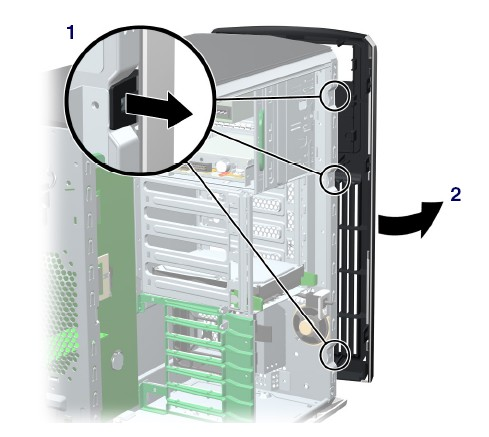
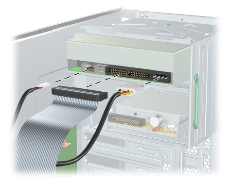

Operating Documentation
Direction 5193574-800, Rev# 22
LightSpeed 7.X Service Methods
Module Version 2.0, Version Date 1/7/13
Operating Documentation |
| Required Persons | Preliminary Reqs | Procedure | Finalization |
|---|---|---|---|
| 1 | 30 mins | 30 mins | 0 min |
This procedure describes the steps necessary to perform HP xw8200 DVD Optical Drive replacement. For preliminary requirements and finalization steps see HP xw8200 Lower Level FRU Replacement
| Last Revised: | 12 October 2012 |
| Item | Qty | Effectivity | Part# | Manufacturer | |
|---|---|---|---|---|---|
| 16X DVD Optical Drive | 1 | - | 5117866-52 or -54 | - | |
| ||||
| System board or component damage could result. | ||||
| The cooling fan is off only when the workstation is turned off or the power cable has been disconnected. The cooling fan is always on when the workstation is in “On” or “Standby” mode. | ||||
| You must disconnect the power cord from the power source before opening the workstation. |
| ||||
| Optical Drive damage could result during removal or installation. | ||||
| Ensure that the optical drive tray is closed and drive is secure when moving the workstation. | ||||
| Failure to do so can damage the drive. |
| ||||
| Turn off the workstation before disconnecting any cables. | ||||
| ||||
TO PREVENT DAMAGE TO COMPONENTS WITHIN THE HP COMPUTER, OBSERVE
THE FOLLOWING ESD PRECAUTIONS:
FOR FURTHER INFORMATION REGARDING ESD PROTECTION, REFER TO THE SAFETY CHAPTER IN THIS PUBLICATION | ||||
| Condition | Reference | Effectivity |
|---|---|---|
Power cord must be disconnected from HP Computer and the computer’s PSU drained of all power. Press and hold HP computer’s power switch on the computer’s front panel for approximately 45 seconds after disconnecting the power cord. | - | - |
Perform the following steps before servicing the workstation.
Remove/disengage any security devices that prohibit opening the workstation.
Disconnect all peripheral device cables from the workstation.
Remove access panel cover per HP xw8200 Lower Level FRU Replacement.
Lift up on the three tabs located on the front bezel (Item 1 in Illustration 1).
Illustration 1: Front Bezel

Rotate the front bezel away from the chassis and remove the bezel (Item 2 in Illustration 1).
Disconnect the power, drive, and audio cables from the drive.
Illustration 2: Power, Drive, and Audio Cables

Lift the green drive lock release lever and gently slide the drive out of the chassis (Illustration 3).
Illustration 3: Removing Optical Drive from Chassis

Lift the green drive lock release lever while sliding the optical drive into the bay.
When the optical drive is partially inserted, release the drivelock release lever and slide the drive completely into the bay until the drive is secured.
Connect the power, drive, and audio (if required) cables to the drive and workstation.
| NOTE: | If running a Linux OS, you must connect an audio cable to the optical drive. |
Return to respective Lower Level FRU Replacement procedure.
No finalization steps.